산업안전지도사 (2016-04-09 기출문제)
1과목: 산업안전보건법령
1. 산업안전보건법령상 사업주가 이행하여야 할 의무에 해당하는 것은?
- 사업장에 대한 재해 예방 지원 및 지도
- 근로자의 신체적 피로와 정신적 스트레스 등을 줄일 수 있는 쾌적한 작업환경조성 및 근로조건 개선
- 유해하거나 위험한 기계ㆍ기구ㆍ설비 및 물질 등에 대한 안전ㆍ보건상의 조치기준 작성 및 지도ㆍ감독
- 산업재해에 관한 조사 및 통계의 유지ㆍ관리
- 안전ㆍ보건을 위한 기술의 연구ㆍ개발 및 시설의 설치ㆍ운영
(정답률: 85%)

2. 산업안전보건법령상 안전ㆍ보건표지의 분류별 종류와 색채가 올바르게 연결된 것은?
- 지시표지(방독마스크 착용) - 바탕은 파란색, 관련 그림은 흰색
- 금지표지(물체이동금지) - 바탕은 흰색, 기본모형은 녹색, 관련 부호 및 그림은 흰색
- 경고표지(폭발성물질 경고) - 바탕은 노란색, 기본모형, 관련 부호 및 그림은 흰색
- 안내표지(비상용기구) - 바탕은 흰색, 기본모형은 빨간색, 관련 부호 및 그림은 검은색
- 안내표지(응급구호표지) - 바탕은 무색, 기본모형은 검은색
(정답률: 85%)
3. 산업안전보건법령상 산업재해 발생 보고에 관한 설명이다. ( )안에 들어갈 내용을 순서대로 올바르게 나열한 것은?
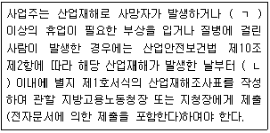
- ㄱ: 1일 ㄴ: 1개월
- ㄱ: 2일 ㄴ: 14일
- ㄱ: 3일 ㄴ: 1개월
- ㄱ: 5일 ㄴ: 2개월
- ㄱ: 5일 ㄴ: 3개월
(정답률: 95%)
4. 산업안전보건법령상 안전관리전문기관에 대한 지정의 취소 등에 관한 설명으로 옳지 않은 것은?
- 고용노동부장관은 안전관리전문기관이 지정요건을 충족하지 못한 경우 반드시 지정을 취소하여야 한다.
- 고용노동부장관은 안전관리전문기관이 거짓이나 그 밖의 부정한 방법으로 지정을 받은 경우 지정을 취소하여야 한다.
- 고용노동부장관은 안전관리전문기관이 지정받은 사항을 위반하여 업무를 수행한 경우 6개월 이내의 기간을 정하여 그 업무의 정지를 명할 수 있다.
- 안전관리전문기관은 고용노동부장관으로부터 지정이 취소된 경우에 그 지정이 취소된 날부터 2년 이내에는 안전관리전문기관으로 지정받을 수 없다.
- 고용노동부장관이 안전관리전문기관에 대하여 업무의 정지를 명하여야 하는 경우에 그 업무정지가 이용자에게 심한 불편을 주거나 공익을 해할 우려가 있다고 인정하면 업무정지처분에 갈음하여 1억원 이하의 과징금을 부과할 수 있다.
(정답률: 57%)
5. 산업안전보건법령상 산업안전보건위원회에 관한 설명으로 옳지 않은 것은?
- 사업주는 산업안전ㆍ보건에 관한 중요 사항을 심의ㆍ의결하기 위하여 근로자와 사용자가 같은 수로 구성되는 산업안전보건위원회를 설치ㆍ운영하여야 한다.
- 사업주는 유해하거나 위험한 기계ㆍ기구와 그 밖의 설비를 도입한 경우 안전ㆍ보건조치에 관한 사항에 대하여는 산업안전보건위원회의 심의ㆍ의결을 거쳐야 한다.
- 산업안전보건위원회의 위원장은 위원 중에서 호선(互選)한다. 이 경우 근로자위원과 사용자위원 중 각 1명을 공동위원장으로 선출할 수 있다.
- 사업주는 안전보건관리규정을 작성하거나 변경할 때에는 산업안전보건위원회의 심의ㆍ의결을 거쳐야 한다. 다만, 산업안전보건위원회가 설치되어 있지 아니한 사업장의 경우에는 근로자대표의 동의를 받아야 한다.
- 산업안전보건위원회는 산업안전ㆍ보건에 관한 중요사항에 대하여 심의ㆍ의결을 하지만 해당 사업장 근로자의 안전과 보건을 유지ㆍ증진시키기 위하여 필요한 사항을 정할 수 없다.
(정답률: 95%)
6. 산업안전보건법령상 안전보건관리규정 작성 시 포함되어야 할 사항이 아닌 것은?
- 사고 조사 및 대책 수립에 관한 사항
- 안전ㆍ보건 관리조직과 그 직무에 관한 사항
- 작업장 안전관리에 관한 사항
- 작업장 건설과 민원대책에 관한 사항
- 작업장 보건관리에 관한 사항
(정답률: 89%)
7. 산업안전보건법령상 작업중지 등에 관한 설명으로 옳지 않은 것은?
- 사업주는 산업재해가 발생할 급박한 위험이 있을 때 또는 중대재해가 발생하였을 때에는 즉시 작업을 중지시키고 근로자를 작업장소로부터 대피시키는 등 필요한 안전ㆍ보건상의 조치를 한 후 작업을 다시 시작하여야 한다.
- 근로자는 산업재해가 발생할 급박한 위험으로 인하여 작업을 중지하고 대피하였을 때에는 사태가 안정된 후에 그 사실을 위 상급자에게 보고하는 등 적절한 조치를 취하여야 한다.
- 사업주는 산업재해가 발생할 급박한 위험이 있다고 믿을 만한 합리적인 근거가 있을 때에는 산업안전보건법의 규정에 따라 작업을 중지하고 대피한 근로자에 대하여 이를 이유로 해고나 그 밖의 불리한 처우를 하여서는 아니 된다.
- 고용노동부장관은 중대재해가 발생하였을 때에는 그 원인 규명 또는 예방대책수립을 위하여 중대재해 발생원인을 조사하고, 근로감독관과 관계 전문가로 하여금 고용노동부령으로 정하는 바에 따라 안전ㆍ보건진단이나 그 밖에 필요한 조치를 하도록 할 수 있다.
- 누구든지 중대재해 발생현장을 훼손하여 중대재해 발생의 원인조사를 방해하여서는 아니 된다.
(정답률: 77%)
8. 산업안전보건법령상 사업주가 작업 중 위험을 방지하기 위하여 필요한 안전조치를 취해야 할 장소가 아닌 것은?
- 근로자가 추락할 위험이 있는 장소
- 토사ㆍ구축물 등이 붕괴할 우려가 있는 장소
- 방사선ㆍ유해광선ㆍ고온ㆍ저온ㆍ초음파ㆍ소음ㆍ진동ㆍ이상기압 등에 의한 건강장해의 우려가 있는 장소
- 물체가 떨어지거나 날아올 위험이 있는 장소
- 작업 시 천재지변으로 인한 위험이 발생할 우려가 있는 장소
(정답률: 62%)
9. 산업안전보건법령상 도급사업 시의 안전ㆍ보건조치 등을 위하여 2일에 1회 이상 순회점검하여야 하는 사업의 작업장에 해당하지 않는 것은?
- 건설업의 작업장
- 정보서비스업의 작업장
- 제조업의 작업장
- 토사석 광업의 작업장
- 음악 및 기타 오디오물 출판업의 작업장
(정답률: 85%)
10. 산업안전보건법령상 고용노동부장관이 실시하는 안전ㆍ보건에 관한 직무교육을 받아야 할 대상자를 모두 고른 것은?
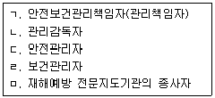
- ㄱ, ㄴ
- ㄴ, ㄷ
- ㄱ, ㄴ, ㄷ
- ㄴ, ㄹ, ㅁ
- ㄱ, ㄷ, ㄹ, ㅁ
(정답률: 89%)
11. 산업안전보건기준에 관한 규칙상 가설통로를 설치하는 경우 준수하여야 하는 사항에 관한 설명으로 옳지 않은 것은?
- 경사는 30도 이하로 할 것. 다만, 계단을 설치하거나 높이 2미터 미만의 가설통로로서 튼튼한 손잡이를 설치한 경우에는 그러하지 아니하다.
- 경사가 15도를 초과하는 경우에는 미끄러운 구조로 할 것
- 추락할 위험이 있는 장소에는 안전난간을 설치할 것. 다만, 작업상 부득이한 경우에는 필요한 부분만 임시로 해체할 수 있다.
- 수직갱에 가설된 통로의 길이가 15미터 이상인 경우에는 10미터 이내마다 계단참을 설치할 것
- 건설공사에 사용하는 높이 8미터 이상인 비계다리에는 7미터 이내마다 계단참을 설치할 것
(정답률: 92%)
12. 산업안전보건법령상 안전관리자가 수행하여야 할 업무가 아닌 것은?
- 사업장 순회점검ㆍ지도 및 조치의 건의
- 산업재해 발생의 원인 조사ㆍ분석 및 재발 방지를 위한 기술적 보좌 및 조언ㆍ지도
- 작업장 내에서 사용되는 전체 환기장치 및 국소 배기장치 등에 관한 설비의 점검과 작업방법의 공학적 개선에 관한 보좌 및 조언ㆍ지도
- 산업재해에 관한 통계의 유지ㆍ관리ㆍ분석을 위한 보좌 및 조언ㆍ지도
- 업무수행 내용의 기록ㆍ유지
(정답률: 91%)
13. 산업안전보건법령상 도급사업 시의 안전ㆍ보건조치 등에 관한 설명으로 옳은 것은?
- 도급사업과 관련하여 산업재해를 예방하기 위하여 안전ㆍ보건에 관한 협의체를 구성하는 경우 도급인인 사업주 및 그의 수급인인 사업주의 일부만으로 구성할 수 있다.
- 수급인인 사업주는 도급인인 사업주가 실시하는 근로자의 해당 안전ㆍ보건ㆍ위생교육에 필요한 장소 및 자료의 제공 등 필요한 조치를 하여야 한다.
- 안전ㆍ보건상 유해하거나 위험한 작업을 도급하는 경우 도급인은 수급인에게 자료제출을 요구하여야 한다.
- 도급인인 사업주가 합동안전ㆍ보건점검을 할 때에는 도급인인 사업주, 수급인인 사업주, 도급인 및 수급인의 근로자 각 1명으로 점검반을 구성하여야 한다.
- 안전ㆍ보건상 유해하거나 위험한 작업 중 사업장 내에서 공정의 일부분을 도급 하는 도금작업은 시ㆍ도지사의 승인을 받지 아니하면 그 작업만을 분리하여 도급을 줄 수 없다.
(정답률: 65%)
14. 산업안전보건법령상 유해ㆍ위험 방지를 위하여 방호조치가 필요한 기계ㆍ기구등에 해당하지 않는 것은?
- 예초기
- 원심기
- 전단기(剪斷機) 및 절곡기(折曲機)
- 지게차
- 금속절단기
(정답률: 60%)
15. 산업안전보건법령상 기계ㆍ기구 등을 설치ㆍ이전하는 경우에 안전인증을 받아야 하는 기계ㆍ기구 등을 모두 고른 것은?
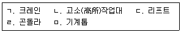
- ㄱ, ㄴ, ㄷ
- ㄱ, ㄷ, ㄹ
- ㄴ, ㄷ, ㅁ
- ㄴ, ㄹ, ㅁ
- ㄷ, ㄹ, ㅁ
(정답률: 89%)
16. 산업안전보건법령상 자율안전확인의 신고를 면제하는 경우에 해당하지 않는 것은?
- 「품질경영 및 공산품안전관리법」제14조에 따른 안전인증을 받은 경우
- 「산업표준화법」제15조에 따른 인증을 받은 경우
- 「전기용품안전관리법」제3조 및 제5조에 따른 안전인증 및 안전검사를 받은 경우
- 「농업기계화촉진법」제9조에 따른 검정을 받은 경우
- 「방위사업법」제28조 제1항에 따른 품질보증을 받은 경우
(정답률: 70%)
17. 산업안전보건법령상 안전검사 대상이 아닌 것은?
- 전단기
- 건조설비 및 그 부속설비
- 롤러기(밀폐형 구조)
- 프레스
- 화학설비 및 그 부속설비
(정답률: 70%)
18. 산업안전보건법령상 제조 또는 사용허가를 받아야 하는 유해물질에 해당하는 것은?
- 황린(黃燐) 성냥
- 벤조트리클로리드
- 백석면
- 폴리클로리네이티드터페닐(PCT)
- 4-니트로디페닐과 그 염
(정답률: 47%)
19. 산업안전보건법령상 신규화학물질의 유해성ㆍ위험성 조사 대상에서 제외되는 것은?
- 방사성 물질
- 노말헥산
- 포름알데히드
- 카드뮴 및 그 화합물
- 트리클로로에틸렌
(정답률: 67%)
20. 산업안전보건법령상 근로자의 보건관리에 관한 설명으로 옳지 않은 것은?
- 사업주는 작업환경측정의 결과를 해당 작업장 근로자에게 알려야 하며, 그 결과에 따라 근로자의 건강을 보호하기 위하여 해당 시설ㆍ설비의 설치ㆍ개선 또는 건강진단의 실시 등 적절한 조치를 하여야 한다.
- 고용노동부장관은 근로자의 건강을 보호하기 위하여 필요하다고 인정할 때에는 사업주에게 특정근로자에 대한 임시건강진단의 실시나 그 밖에 필요한 조치를 명할 수 있다.
- 고용노동부장관이 역학조사(疫學調査)를 실시하는 경우 사업주 및 근로자는 적극 협조하여야 하며, 정당한 사유없이 이를 거부ㆍ방해하거나 기피하여서는 아니 된다.
- 사업주는 잠함(潛艦) 또는 잠수작업 등 높은 기압에서 하는 위험한 작업에 종사하는 근로자에게는 1일 6시간, 1주 34시간을 초과하여 근로하게 하여서는 아니 된다.
- 사업주는 산업안전보건위원회 또는 근로자대표가 요구하면 작업환경측정 결과에 대한 설명회를 직접 개최하여야 하며, 작업환경측정을 한 기관으로 하여금 개최하도록 하여서는 아니 된다.
(정답률: 88%)
21. 산업안전보건법령상 사업주가 근로를 금지시켜야 하는 질병자에 해당하지 않는 것은?
- 정신분열증에 걸린 사람
- 마비성 치매에 걸린 사람
- 심장ㆍ신장ㆍ폐 등의 질환이 있는 사람으로서 근로에 의하여 병세가 악화될 우려가 있는 사람
- 결핵, 급성상기도감염, 진폐, 폐기종의 질병에 걸린 사람
- 전염을 예방하기 위한 조치를 하지 않은 상태에서 전염될 우려가 있는 질병에 걸린 사람
(정답률: 47%)
22. 산업안전보건법령상 고용노동부장관이 사업주에게 수립ㆍ시행을 명할 수 있는 계획에 관한 설명이다. ( )안에 들어갈 내용으로 옳은 것은?
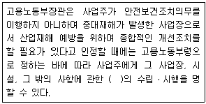
- 유해ㆍ위험방지계획
- 안전교육계획
- 보건교육계획
- 비상조치계획
- 안전보건개선계획
(정답률: 84%)
23. 산업안전보건법령상 산업안전지도사 및 산업보건지도사(이하 “지도사”라 함)에 관한 설명으로 옳지 않은 것은?
- 지도사가 그 직무를 시작할 때에는 고용노동부장관에게 신고하여야 한다.
- 지도사는 그 직무상 알게 된 비밀을 누설하거나 도용하여서는 아니 된다.
- 지도사는 항상 품위를 유지하고 신의와 성실로써 공정하게 직무를 수행하여야 한다.
- 지도사는 법령에 위반되는 행위에 관한 지도ㆍ상담을 하여서는 아니 된다.
- 지도사는 다른 사람에게 자기의 성명이나 사무소의 명칭을 사용하여 지도사의 직무를 수행하게 하거나 그 자격증을 대여하여서는 아니 된다.
(정답률: 54%)
24. 산업안전보건법령상 위험성평가 실시내용 및 결과의 기록ㆍ보존에 관한 설명으로 옳지 않은 것은?
- 위험성평가 대상의 유해ㆍ위험요인이 포함되어야 한다.
- 위험성 결정의 내용이 포함되어야 한다.
- 위험성 결정에 따른 조치의 내용이 포함되어야 한다.
- 위험성평가의 실시내용을 확인하기 위하여 필요한 사항으로서 고용노동부장관이 정하여 고시하는 사항이 포함되어야 한다.
- 사업주는 위험성평가 실시내용 및 결과의 기록ㆍ보존에 따른 자료를 5년간 보존하여야 한다.
(정답률: 80%)
25. 산업안전보건법령상 산업보건지도사의 직무에 해당하지 않는 것은?
- 작업환경의 평가 및 개선 지도
- 산업보건에 관한 조사ㆍ연구
- 근로자 건강진단에 따른 사후관리 지도
- 유해ㆍ위험의 방지대책에 관한 평가ㆍ지도
- 작업환경 개선과 관련된 계획서 및 보고서의 작성
(정답률: 63%)
2과목: 산업안전일반
26. 신뢰성 척도에 관한 설명으로 옳지 않은 것은?
- 특정시점에서의 신뢰도는 시스템 혹은 부품이 작동을 시작하여 어느 시점에서 작동하고 있지 않을 확률로 정의된다.
- 고장률(failure rate)은 특정시점까지 고장 나지 않고 작동하던 시스템 혹은 부품이 이 시점으로부터 단위 기간 내에 고장을 일으키는 비율을 나타낸 것이다.
- 평균수명(MTTF)은 수리가 불가능한 시스템 혹은 부품인 경우의 평균수명을 뜻한다.
- 평균잔여수명(MRL)은 현장에서 사용되고 있는 기존 설비의 교체 여부를 결정하는데에 의미있는 정보를 제공하는 척도가 된다.
- 백분위수명은 전체 부품 가운데 100%가 고장 나는 시점을 나타낸다.
(정답률: 62%)
27. 정보입력표시방법으로서 시각적 표시장치로 옳지 않은 것은?
- 연속적으로 변하는 변수의 대략적인 값을 표시하는 것과 같은 자동차 계기판의 연료계
- 화재 등 비상 상황이 발생하였을 때 울리는 경보기
- 지나가는 차량의 댓수 같은 정보를 제공하는 데 사용되는 계수기
- 진행과 정지 그리고 방향전환 및 주의 등을 색상이 있는 등화로 표시하는 교통신호기
- 항해 중인 선박에게 항운 정보를 제공하는 야간의 등대 불빛
(정답률: 67%)
28. 위험성평가(risk assessment)의 순서가 올바르게 나열한 것은?
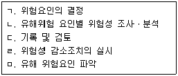
- ㄱ → ㄴ → ㄷ → ㄹ → ㅁ
- ㄱ → ㄴ → ㄹ → ㄷ → ㅁ
- ㄴ → ㅁ → ㄱ → ㄹ → ㄷ
- ㅁ → ㄴ → ㄱ → ㄹ → ㄷ
- ㅁ → ㄹ → ㄷ → ㄱ → ㄴ
(정답률: 83%)
29. 고장분포함수가 F(t) (t=time)일 때, 함수간의 관계가 잘못 표시된 것은? (단, f(t)는 고장밀도함수이고, R(t)는 신뢰도함수이며, h(t)는 고장률함수이다.)
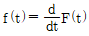
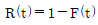
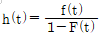
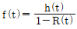
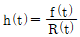
(정답률: 56%)
30. A 시스템은 그림과 같이 3가지의 부품을 직렬로 연결한 체계를 체계중복으로 하여 구성되어 있으며, 그림의 수치들은 각각 부품들의 신뢰도를 표기한 것이다. A 시스템의 신뢰도는? (단, 소수점 넷째자리에서 반올림하여 소수점 셋째자리까지 구하시오.)
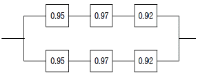
- 0.957
- 0.967
- 0.977
- 0.987
- 0.997
(정답률: 56%)
31. 인간공학에 관한 설명으로 옳지 않은 것은?
- 인간공학은 인간이 사용할 수 있도록 설계하는 과정을 말하는 것으로 인간의 복지를 향상시키는 데 목적이 있다.
- 인간공학의 핵심 포인트는 인간이 사용하는 물건 또는 환경을 설계할 시 건강, 안정, 만족 등과 같은 특정한 인간본위의 가치기준보다는 실용적 기능을 높이는데 있다.
- 인간공학은 인간이 사용하는 물건 또는 환경을 설계할 시 인간의 행동에 관한 적절한 정보를 체계적으로 적용하는 것이다.
- 인간공학은 기계와 그 기계조작 및 환경조건을 인간의 특성, 능력과 한계에 잘 조화되도록 설계하기 위한 공학이다.
- 인간공학은 안전성의 향상과 사고예방, 생산성의 향상, 쾌적성 등을 추구한다.
(정답률: 78%)
32. 시스템의 특성에 관한 설명으로 옳지 않은 것은?
- 시스템은 환경에 적응하거나 극복하면서 유지시켜야 한다.
- 각각의 하위시스템들은 상호 간의 연관관계에 의해 시스템의 목표가 달성될 수 있도록 하여야 한다.
- 시스템은 하나 이상의 하위시스템으로 구성된다.
- 시스템은 단순히 구성요소들의 합이 아니며, 시스템 그 자체는 별개의 존재로서 하나의 단일체이다.
- 시스템은 복잡한 환경 속에서 목표를 달성하기 위하여, 각각의 하위시스템이 독립적인 목표를 가지고 작동되도록 하여야 한다.
(정답률: 50%)
33. 휴먼에러(human error)의 심리적 분류에 포함되지 않는 것은?
- 정보처리오류(information processing error)
- 시간오류(time error)
- 작위오류(commission error)
- 순서오류(sequential error)
- 누락오류(omission error)
(정답률: 83%)
34. 산업안전보건기준에 관한 규칙상 근골격계부담작업과 근골격계질환에 관한 설명으로 옳지 않은 것은?
- “근골격계부담작업”이란 단순반복작업 또는 인체에 과도한 부담을 주는 작업에의한 건강장해에 따른 작업으로서 작업량ㆍ작업속도ㆍ작업강도 및 작업장 구조 등에 따라 고용노동부장관이 정하여 고시하는 작업을 말한다.
- “근골격계질환”이란 반복적인 동작, 부적절한 작업자세, 무리한 힘의 사용, 날카로운 면과의 신체접촉, 진동 및 온도 등의 요인에 의하여 발생하는 건강장해로서 목, 어깨, 허리, 팔ㆍ다리의 신경ㆍ근육 및 그 주변 신체조직 등에 나타나는 질환을 말한다.
- “근골격계질환 예방관리 프로그램”이란 유해요인 조사, 작업환경 개선, 의학적 관리, 교육ㆍ훈련, 평가에 관한 사항 등이 포함된 근골격계질환을 예방관리하기 위한 종합적인 계획을 말한다.
- 사업주는 유해요인 조사 결과 근골격계질환이 발생할 우려가 있는 경우에 인간공학적으로 설계된 인력작업 보조설비 및 편의설비를 설치하는 등 작업환경 개선에 필요한 조치를 하여야 한다.
- 근로자는 근골격계부담작업으로 인하여 운동범위의 축소, 쥐는 힘의 저하, 기능의 손실 등의 징후가 나타나는 경우 즉시 관할 지방노동청에 신고하여야 한다.
(정답률: 74%)
35. 토의식 교육 시 유의사항이 아닌 것은?
- 교육생이 토의될 주제를 충분히 파악해야 한다.
- 진행자는 토의될 구체적인 문제나 이유에 대하여 말로 설명하지 않고 서면으로 하여야 한다.
- 진행자는 교육생들이 토의결과에 대하여 명료화 내지 요약을 하도록 요구해야 한다.
- 진행자는 진행에 충실하고 강의나 설명을 가급적 하지 않는다.
- 진행자는 주제를 이해하지 못하는 교육생을 배려하여야 한다.
(정답률: 77%)
36. 다음은 안전보건관리 이론 중 재해발생 메커니즘(모델, 구조)을 도식화한 것이다. ( )의 내용이 올바르게 연결된 것은?
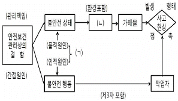
- ㄱ: 간접요인, ㄴ: 추락물
- ㄱ: 직접원인, ㄴ: 낙하물
- ㄱ: 간접요인, ㄴ: 기인물
- ㄱ: 직접원인, ㄴ: 기인물
- ㄱ: 간접요인, ㄴ: 낙하물
(정답률: 92%)
37. OJT(on the job training)에 비하여 Off JT(off the job training)의 장점으로 옳은 것은?
- 많은 근로자들을 집중적으로 단시간에 훈련하기에 적합하다.
- 직장 및 직무의 실정에 맞는 실제적 훈련에 적합하다.
- 훈련에 필요한 업무의 계속성이 끊어지지 않는다.
- 개개인에게 적절한 지도 훈련이 가능하다.
- 실무지식의 함양에 대한 직원들의 만족도가 상대적으로 높다.
(정답률: 71%)
38. 산업안전보건법령상 안전보건관리책임자 등에 대한 교육내용 중 안전보건관리책임자의 '보수과정'에 해당하는 것은?
- 안전관리계획 및 안전보건개선계획의 수립ㆍ평가ㆍ실무에 관한 사항
- 사업장 안전개선기법에 관한 사항
- 자율안전ㆍ보건관리에 관한 사항
- 분야별 재해 및 개선사례연구실무에 관한 사항
- 산업안전보건관리비 사용기준 및 사용방법에 관한 사항
(정답률: 63%)
39. 안전ㆍ보건교육 중 기능교육의 특징이 아닌 것은?
- 작업능력 및 기술능력 부여
- 광범위한 지식의 전달
- 교육기간의 장기화
- 작업동작의 표준화
- 대규모인원에 대한 교육 곤란
(정답률: 65%)
40. 결함수분석(FTA)에 관한 설명으로 옳지 않은 것은?
- 기계, 설비 또는 인간-기계 시스템의 고장이나 재해의 발생요인을 FT도표에 의하여 분석하는 방법이다.
- 해석하고자 하는 재해의 발생확률을 계산한다.
- 재해발생 이전에 예측기법으로 활용함으로써 예방적 가치가 높은 기법이다.
- 재해현상과 재해원인의 상호관련을 정량적으로 해석하여 안전대책을 검토할 수 있다.
- 각 요소의 고장유형과 그 고장이 미치는 영향을 분석하는 연역적이면서 정성적인 방법을 사용한다.
(정답률: 50%)
41. 하인리히(Heinrich)의 재해발생 5단계에 관한 설명으로 옳지 않은 것은?
- 제1단계: 사회적 환경과 유전적 요소(social environment and inherit)
- 제2단계: 개인적 결함(personal faults)
- 제3단계: 조직의 결함(organization faults)
- 제4단계: 사고(accident)
- 제5단계: 재해(disaster)
(정답률: 89%)
42. 다음이 설명하는 기법은?
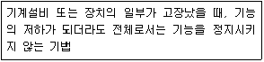
- Fail safe
- Back up
- Fail soft
- Fool proof
- Fail passive
(정답률: 50%)
43. 재해조사 시의 유의사항으로 옳지 않은 것은?
- 피해자에 대한 구급 조치를 최우선으로 한다.
- 사람과 기계설비 양면의 재해요인을 모두 도출한다.
- 2차 재해의 예방을 위하여 보호구를 착용한다.
- 주관적인 입장에서 공정하게 조사하며, 조사는 3인 이상이 한다.
- 조사는 신속하게 행하고 긴급 조치 후, 2차 재해방지에 주력한다.
(정답률: 78%)
44. 600명이 근무하는 A기업에서 2015년에 9건의 재해발생으로 휴업일수는 150일을 기록하였다. A기업의 재해통계로 옳은 것은? (단, A기업의 작업시간 8hr/일, 잔업시간 2hr/일, 월25일 근무이며, 소수점 셋째자리에서 반올림하여 소수점 둘째자리까지 구하시오.)
- 도수율: 5, 강도율: 0.07
- 도수율: 5, 강도율: 0.78
- 도수율: 10, 강도율: 0.78
- 도수율: 15, 강도율: 0.08
- 도수율: 15, 강도율: 9
(정답률: 39%)
45. 하인리히(Heinrich)의 재해손실비(accident cost)에 관한 설명으로 옳지 않은 것은?
- 직접비와 간접비의 비율은 1 : 4이다.
- 직접비는 법령으로 정한 피해자에게 지급되는 산재보상비이다.
- 간접비는 재산손실 및 생산중단으로 기업이 입은 손실이다.
- 간접비의 정확한 산출이 어려울 때는 직접비의 2배를 간접비로 산정한다.
- 총 재해손실비는 직접비와 간접비를 더한 값으로 계산한다.
(정답률: 79%)
46. 안전점검표(checklist) 작성 시 유의사항이 아닌 것은?
- 사업장에 적합한 독자적인 내용일 것
- 중점도가 낮은 것부터 순서대로 작성할 것
- 재해방지에 실효성 있게 개조된 내용일 것
- 일정양식을 정하여 점검대상을 정할 것
- 점검표의 내용은 이해하기 쉽도록 표현하고 구체적일 것
(정답률: 78%)
47. 산업안전보건법령상 안전보건개선계획서의 포함내용이 아닌 것은?
- 시설
- 안전ㆍ보건관리체제
- 문제해결 방향에서의 계획
- 산업재해 예방 및 작업환경 개선을 위하여 필요한 사항
- 안전ㆍ보건교육
(정답률: 67%)
48. 재해사례 연구의 진행단계별 설명으로 옳지 않은 것은?
- 전제조건: 재해상황을 파악한다.
- 사실의 확인: 재해와 관계가 있는 사실 및 재해요인으로 알려진 사실을 주관적으로 확인한다.
- 문제점의 발견: 각종 기준과의 차이에서 문제점을 발견한다.
- 근본적 문제점의 결정: 재해의 중심이 된 근본적인 문제점을 결정한 후 재해원인을 결정한다.
- 대책의 수립: 동종재해와 유사재해의 방지 및 실시계획을 수립한다.
(정답률: 83%)
49. 산업재해 발생시 처리순서를 올바르게 나열한 것은?
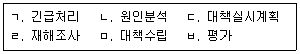
- ㄱ→ㄹ→ㄴ→ㅁ→ㄷ→ㅂ
- ㄱ→ㄹ→ㅁ→ㄷ→ㄴ→ㅂ
- ㄹ→ㄱ→ㄴ→ㄷ→ㅁ→ㅂ
- ㄹ→ㄱ→ㄷ→ㄴ→ㅁ→ㅂ
- ㄹ→ㄴ→ㄱ→ㅁ→ㄷ→ㅂ
(정답률: 75%)
50. 사고예방대책 기본원리 5단계 중 2단계인 '사실의 발견'에 해당하지 않는 것은?
- 근로자의 의견수렴 및 여론조사
- 작업분석
- 점검 및 검사
- 과거의 사고에 관한 조사
- 기술적 개선
(정답률: 80%)
3과목: 기업진단ㆍ지도
51. 인간관계론의 호손실험에 관한 설명으로 옳지 않은 것은?
- 종업원의 작업능률에 영향을 미치는 요인을 연구하였다.
- 조명실험은 실험집단과 통제집단을 나누어 진행하였다.
- 작업능률향상은 작업장에서 물리적 작업조건 변화가 가장 중요하다는 것을 확인하였다.
- 면접조사를 통해 종업원의 감정이 작업에 어떻게 작용하는가를 파악하였다.
- 작업능률은 비공식조직과 밀접한 관련이 있다는 것을 발견하였다.
(정답률: 56%)
52. 노사관계에 관한 설명으로 옳은 것은?
- 숍(shop) 제도는 노동조합의 규모와 통제력을 좌우할 수 있다.
- 체크오프(check off) 제도는 노동조합비의 개별납부제도를 의미한다.
- 경영참가 방법 중 종업원 지주제도는 의사결정 참가의 한 방법이다.
- 준법투쟁은 사용자측 쟁위행위의 한 방법이다.
- 우리나라 노동조합의 주요 형태는 직종별 노동조합이다.
(정답률: 59%)
53. 조직문화에 관한 설명으로 옳지 않은 것은?
- 조직사회화란 신입사원이 회사에 대하여 학습하고 조직문화를 이해하기 위한 다양한 활동이다.
- 조직의 핵심가치가 더 강조되고 공유되고 있는 강한 문화(strong culture)가 조직에 끼치는 잠재적 역기능을 무시해서는 안 된다.
- 조직문화는 하루아침에 갑자기 형성된 것이 아니고 한번 생기면 쉽게 없어지지 않는다.
- 창업자의 행동이 역할모델로 작용하여 구성원들이 그런 행동을 받아들이고 창업자의 신념, 가치를 외부화(externalization) 한다.
- 구성원 모두가 공동으로 소유하고 있는 가치관과 이념, 조직의 기본목적 등 조직체 전반에 관한 믿음과 신념을 공유가치라 한다.
(정답률: 74%)
54. 기술과 조직구조에 관한 설명으로 옳은 것을 모두 고른 것은?
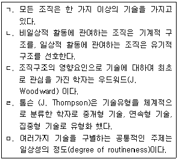
- ㄱ, ㄴ
- ㄷ, ㄹ
- ㄴ, ㄷ, ㄹ
- ㄷ, ㄹ, ㅁ
- ㄱ, ㄷ, ㄹ, ㅁ
(정답률: 50%)
55. 생산시스템은 투입, 변환, 산출, 통제, 피드백의 5가지 구성요소로 설명할 수 있다. 생산시스템에 관한 설명으로 옳지 않은 것은?
- 변환은 제조공정의 경우 고정비와 관련성이 크다.
- 투입은 생산시스템에서 재화나 서비스를 창출하기 위해 여러 가지 요소를 입력하는 것이다.
- 변환은 여러 생산자원들을 효용성 있는 제품 또는 서비스로 바꾸는 것이다.
- 산출에서는 유형의 재화 또는 무형의 서비스가 창출된다.
- 피드백은 산출의 결과가 초기에 설정한 목표와 차이가 있는지를 비교하고 또한 목표를 달성할 수 있도록 배려하는 것이다.
(정답률: 63%)
56. ERP 시스템의 특징에 관한 설명으로 옳지 않은 것은?
- 수주에서 출하까지의 공급망과 생산, 마케팅, 인사, 재무 등 기업의 모든 기간업무를 지원하는 통합시스템이다.
- 하나의 시스템으로 하나의 생산ㆍ재고거점을 관리하므로 정보의 분석과 피드백 기능의 최적화를 실현한다.
- EDI(Electronic Data Interchange), CALS(Commerce At Light Speed), 인터넷 등으로 연결시스템을 확립하여 기업 간 자원 활용의 최적화를 추구한다.
- 대부분의 ERP시스템은 특정 하드웨어 업체에 의존하지 않는 오픈 클라이언트 서버시스템 형태를 채택하고 있다.
- 단위별 응용프로그램이 서로 통합, 연결되어 중복업무를 배제하고 실시간 정보관리체계를 구축할 수 있다.
(정답률: 54%)
57. 6시그마 품질혁신 활동에 관한 설명으로 옳지 않은 것은?
- 모토롤라사의 빌 스미스(Bill Smith)라는 경영간부의 착상으로 시작되었다.
- 6시그마 활동을 도입하는 조직은 규격 공차가 표준편차(시그마)의 6배라는 우수한 품질수준을 추구한다.
- DPMO란 100만 기회 당 부적합이 발생되는 건수를 뜻하는 용어로 시그마수준과 1 대 1로 대응되는 값으로 변환될 수 있다.
- 6시그마 수준의 공정이란 치우침이 없을 경우 부적합품률이 10억 개에 2개 정도로 추정되는 품질수준이란 뜻이다.
- 6시그마 활동을 효과적으로 실행하기 위해 블랙벨트(BB) 등의 조직원을 육성하여 프로젝트 활동을 수행하게 한다.
(정답률: 40%)
58. JIT(Just In Time) 시스템의 특징에 관한 설명으로 옳은 것은?
- 수요예측을 통해 생산의 평준화를 실현한다.
- 팔리는 만큼만 만드는 Push 생산방식이다.
- 숙련공을 육성하기 위해 작업자의 전문화를 추구한다.
- Fool proof 시스템을 활용하여 오류를 방지한다.
- 설비배치를 U라인으로 구성하여 준비교체 횟수를 최소화 한다.
(정답률: 43%)
59. 카플란(R. Kaplan)과 노턴(D. Norton)이 주창한 BSC(Balance Score Card)에 관한설명으로 옳은 것은?
- 균형성과표로 생산, 영업, 설계, 관리부문의 균형적 성장을 추구하기 위한 목적으로 활용된다.
- 객관적인 성과 측정이 중요하므로 정성적 지표는 사용하지 않는다.
- 핵심성과지표(KPI)는 비재무적요소를 배제하여 책임소재의 인과관계가 명확한 평가가 이루어지도록 한다.
- 기업문화와 비전에 입각하여 BSC를 설정하므로 최고경영자가 교체되어도 지속적으로 유지된다.
- BSC의 실행을 위해서는 관리자들이 조직에서 어느 개인, 어느 부서가 어떤 지표의 달성에 책임을 지는지 확인하여야 한다.
(정답률: 36%)
60. 심리평가에서 검사의 신뢰도와 타당도의 상호관계에 관한 설명으로 옳은 것은?
- 타당도가 높으면 신뢰도는 반드시 높다.
- 타당도가 낮으면 신뢰도는 반드시 낮다.
- 신뢰도가 낮아도 타당도는 높을 수 있다.
- 신뢰도가 높아야 타당도가 높게 나온다.
- 신뢰도와 타당도는 직접적인 상호관계가 없다.
(정답률: 74%)
61. 종업원은 흔히 투입과 이로부터 얻게되는 성과를 다른 종업원과 비교하게 된다. 그 결과, 과소보상으로 인한 불형평 상태가 지각되었을 때, 아담스의 형평이론에서 예측하는 종업원의 후속 반응에 관한 설명으로 옳지 않은 것은?
- 현재의 상황을 형평 상태로 되돌리기 위하여 자신의 투입을 낮출 것이다.
- 자신의 성과를 높이기 위하여 조직의 원칙에 반하는 비윤리적 행동도 불사할 수있다.
- 자신과 타인의 투입-성과 간 불형평 상태에 어떤 요인이 영향을 주었을 거라는 등 해당 상황을 왜곡하여 해석하기도 한다.
- 애초에 비교 대상이 되었던 타인을 다른 비교 대상으로 교체할 수 있다.
- 개인의 '형평민감성'이 높고 낮음에 관계없이 형평 상태로 되돌리려는 행동에서 차이가 없다.
(정답률: 75%)
62. 조직내 종업원들에게 요구되는 바람직한 특성이나 성공적인 수행을 예측해주는 '인적 특성이나 자질'을 찾아내는 과정은?
- 작업자 지향 절차
- 기능적 직무분석
- 역량모델링
- 과업 지향적 절차
- 연관분석
(정답률: 59%)
63. 영업 1팀의 A팀장은 팀원들의 직무수행을 긍정적으로 평가하는 것으로 유명하다. 영업 1팀의 팀원들은 실제 직무수행 수준보다 언제나 높은 평가를 받는다. 한편 영업 2팀의 B팀장은 대부분 팀원을 보통 수준으로 평가한다. 특히 B팀장 자신이 잘 모르는 영역 평가에서 이러한 현상이 두드러진다. 직무수행 평가 패턴에서 A와 B팀장이 각각 범하고 있는 오류(또는 편향)를 순서대로(A, B) 옳게 나열한 것은?
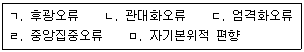
- ㄱ, ㄷ
- ㄱ, ㄹ
- ㄴ, ㄷ
- ㄴ, ㄹ
- ㄴ, ㅁ
(정답률: 34%)
64. 다음을 설명하는 용어는?
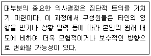
- 집단사고
- 집단극화
- 동조
- 사회적 촉진
- 복종
(정답률: 62%)
65. 산업현장에서 운영되고 있는 팀(team)의 유형에 관한 설명으로 옳지 않은 것은?
- 전술적 팀(tactical team): 수행절차가 명확히 정의된 계획을 수행할 목적으로 하며, 경찰 특공대 팀이 대표적임
- 문제해결 팀(problem-solving team): 특별한 문제나 이슈를 해결할 목적으로 구성되며, 질병통제센터의 진단 팀이 대표적임
- 창의적 팀(creative team): 포괄적 목표를 가지고 가능성과 대안을 탐색할 목적으로 구성되며, IBM의 PC 설계 팀이 대표적임
- 특수 팀(ad hoc team): 조직에서 일상적이지 않고 비전형적인 문제를 해결할 목적으로 구성되며, 팀의 임무를 완수한 후 해체됨
- 다중 팀(multi-team): 개인과 조직시스템 사이를 조정(moderating)하는 메타(meta)적 성격을 갖고 있음
(정답률: 65%)
66. 인사선발에서 활발하게 사용되는 성격측정 분야의 하나로 5요인(Big 5)성격모델이 있다. 성격의 5요인에 해당되지 않는 것은?
- 성실성(conscientiousness)
- 외향성(extraversion)
- 신경성(neuroticism)
- 직관성(immediacy)
- 경험에 대한 개방성(openness to experience)
(정답률: 62%)
67. 소음에 관한 설명으로 옳은 것을 모두 고른 것은?
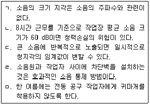
- ㄱ, ㄴ
- ㄴ, ㄷ
- ㄷ, ㄹ
- ㄱ, ㄹ, ㅁ
- ㄴ, ㄷ, ㄹ
(정답률: 88%)
68. 주의(attention)에 관한 설명으로 옳은 것은?
- 용량의 제한이 없기 때문에 한 번에 여러 과제를 동시에 수행할 수 있다.
- 많은 사람들 가운데 오직 한 사람의 목소리에만 주의를 기울일 수 있는 것은 선택주의(selective attention) 덕분이다.
- 선택된 자극의 여러 속성을 통합하고 처리하기 위해 분할주의(divided attention)가 필요하다.
- 운전하면서 친구와 대화하기처럼 두 과제 모두를 성공적으로 수행하기 위해서는 초점주의(focused attention)가 필요하다.
- 무덤덤한 여러 얼굴 가운데 유일하게 화난 얼굴은 의식하지 않아도 쉽게 눈에 띄는데, 이는 무주의 맹시(inattentional blindness) 때문이다.
(정답률: 57%)
69. 공기 중 화학물질 농도(섬유 포함)를 표현하는 단위가 아닌 것은?
- ppm
- ㎍/m3
- CFU/m3
- 개수/cc
- ㎎/m3
(정답률: 74%)
70. 원형 덕트에서 반송속도가 10 m/sec이고, 이곳을 흐르는 공기량은 20 m3/min이다. 이 덕트 직경의 크기(mm)는?
- 약 100
- 약 200
- 약 300
- 약 400
- 약 500
(정답률: 64%)
71. 다음 중 유해인자별 건강영향을 연결한 것으로 옳은 것은?
- 디젤배출물 - 폐암
- 수은 - 피부암
- 벤젠 - 비강암
- 에탄올 - 시각 손상
- 황산 - 뇌암
(정답률: 64%)
72. 다음 중 특수건강진단 대상 유해인자가 아닌 것은?
- 염화비닐
- 트리클로로에틸렌
- 니켈
- 수산화나트륨
- 자외선
(정답률: 55%)
73. 유해인자 노출평가에서 고려할 사항이 아닌 것은?
- 흡수경로(침입경로)
- 노출시간
- 노출빈도
- 작업강도
- 작업숙련도
(정답률: 89%)
74. 유해인자 노출기준에 관한 설명으로 옳은 것은?
- ACGIH TLV는 미국에서 법적 구속력이 있다.
- 대부분의 노출기준은 인체 실험에 의한 결과에서 설정된 것이다.
- 우리나라 노출기준은 미국 OSHA PEL을 준용하고 있다.
- 노출기준이 초과하면 질병이 대부분 발생한다.
- 일반적으로 노출기준 설정은 인체면역에 의한 보상 수준을 고려한 것이다.
(정답률: 64%)
75. 우리나라 산업보건 역사에 관한 설명으로 옳은 것은?
- 원진레이온 이황화탄소 중독을 계기로 산업안전보건법이 제정되었다.
- 1988년 문송면씨 사망으로 수은 중독이 사회적 이슈가 되었다.
- 2004년 외국인 근로자 다발성 신경 손상에 의한 하지마비(앉은뱅이병) 원인인자는 벤젠이었다.
- 2016년 메탄올 중독 사건은 특수건강진단에서 밝혀졌다.
- 1995년 전자부품제조 근로자 생식독성의 원인 인자는 납이였다.
(정답률: 54%)